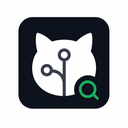

hoppscotch/hoppscotch
Open-source API development ecosystem with strong docs and adoption.
91/100

OSS Research MCPMCP user experience demo
Search GitHub, inspect license risk, compare candidates, and generate adoption notes through one read-only MCP server.
Open-source API development ecosystem with strong docs and adoption.
Git-friendly API client with local collections and permissive licensing.
Established API client with broad ecosystem and active maintenance signals.
The video walks through the first-run experience: start the server, connect an MCP client, search, analyze, compare, and produce integration notes.
No custom dashboard is required. The server adds GitHub research tools to the MCP client the user already works in.
Start with npx or a global npm install. The default transport is stdio.
Add one MCP server entry. A GitHub token is optional for higher limits.
Search alternatives, inspect licenses, compare libraries, and read files.
Generate concise integration notes with risk, license, and setup context.
These commands are the same flow covered in the demo video.
npx oss-research-mcp
# optional, higher GitHub rate limits
GITHUB_TOKEN=ghp_xxx npx oss-research-mcp{
"mcpServers": {
"oss-research": {
"command": "npx",
"args": ["-y", "oss-research-mcp"],
"env": { "GITHUB_TOKEN": "" }
}
}
}